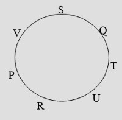

- 30
- 32
- 27
- 42
Therefore, Total boys = 22+1+12=35
- P
- Z
- X
- A
S and Z are in centre _ _ S Z _ _
A and P are at the ends P _ S Z _ A
R is sitting to the left of A P _ S Z R A
Therefore, X is remaining, so Right of P is ‘X’
- P
- A
- X
- Z
A is sitting next to B B A _ _ _
C is sitting next to D B A D C _
D is not sitting with E who is on the left end of the bench E B A D C
C is on the second position from the right E B A C E
Therefore, A is sitting in between B and C.
- P
- A
- X
- D
D is to the immediate right of C C D _ _ _ _ _
E and A are neighbor's of F C D E F A_ _
B is to the immediate left of C and on second place from left most end _ B C D E F A
A is at the right most end G B C D E F A
Therefore, D is in between C and E
i. P, Q, R, S, T, U and V are sitting around a circular table facing the centre
ii. R is next to the left of U and V is second to the left of R.
iii.P is sitting third to the left of T.
iv. Q is between S and T.
Which of the following is false?
1. P is fourth to the right of T.
2. U is to the immediate right of R.
3. U is third to the right of S.
4. Q is to the immediate left of S.
- 1
- 2
- 3
- 4
We can arrange the persons in the following way.
 U is third to the right of S is wrong.